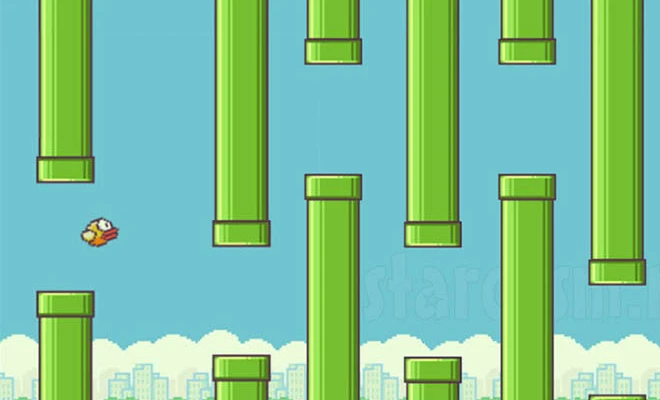

Flappy Bird

This is my favorite game!
Flappy Bird is a simple yet challenging mobile game where the player controls a bird navigating through a series of green pipes.
The goal is to fly as far as possible without hitting any pipes, with each successful passage awarding a point.
The game's difficulty stems from the bird's constant descent,
requiring precise taps on the screen to make it flap its wings and ascend.
Back to Home